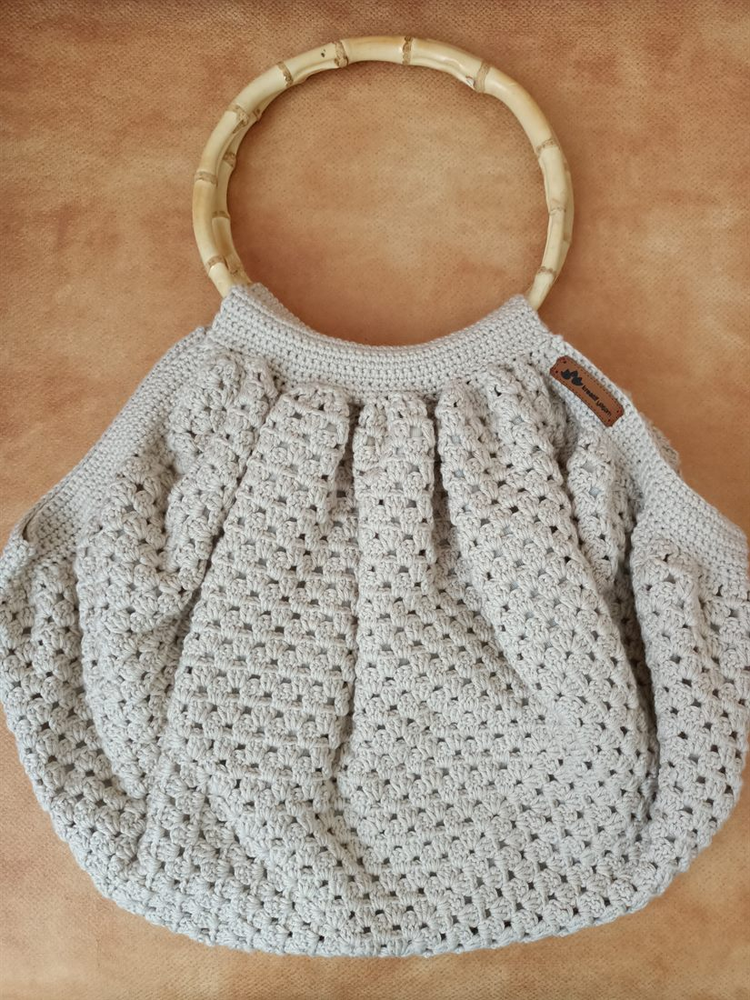
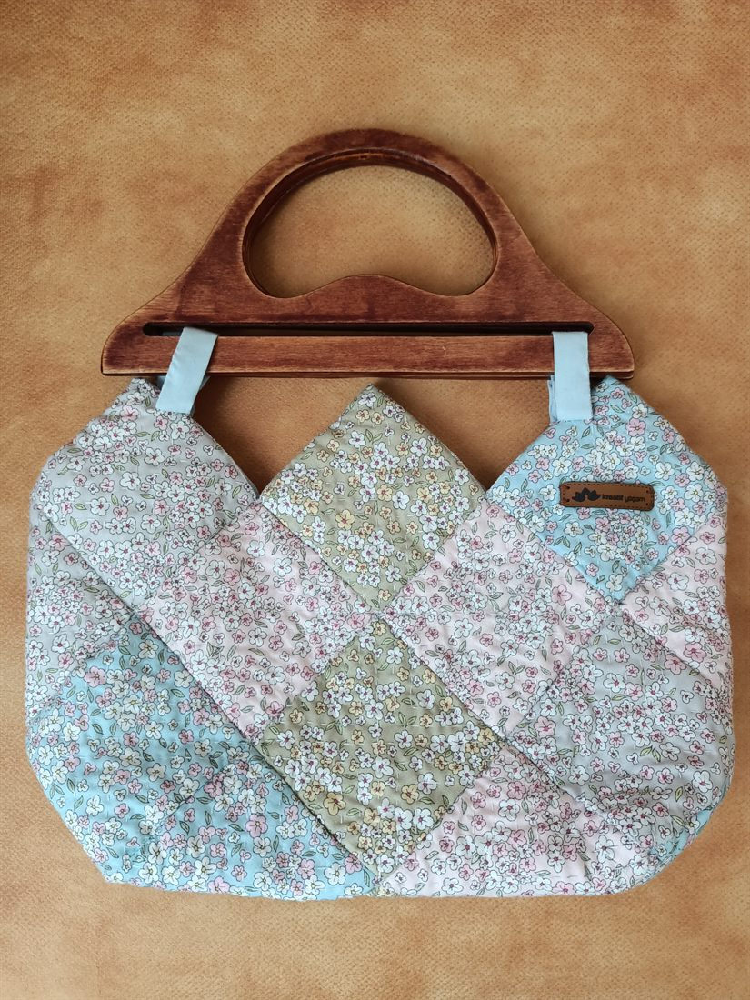
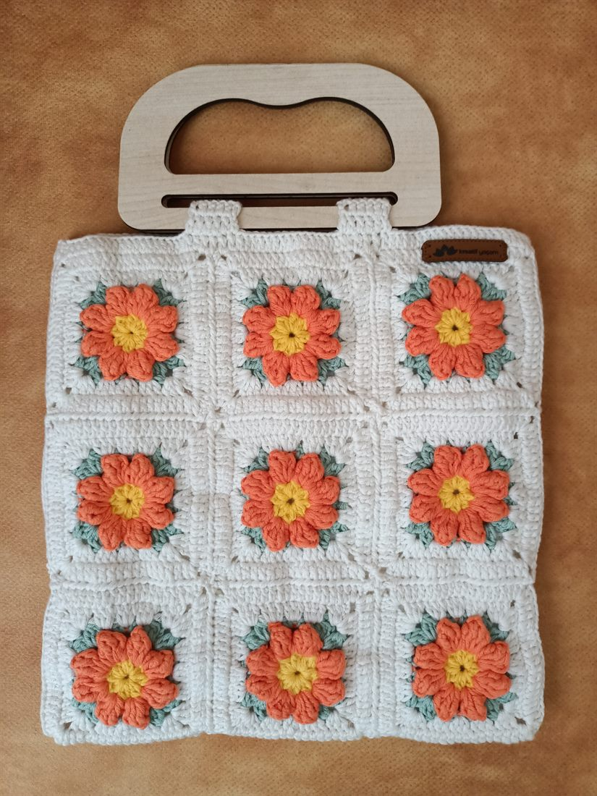

Bambu
Bambu sap, su geçirmez kumaş astar.
Serda Ayık Sez
Okumadan, yazmadan, elleri işlemeden duramayan; biraz heyecanlı, bir o kadar telaşlı, biraz çocuk, biraz yetişkin ama çokça bir hayalperest.
Kitabım
Yıllara yayılan bir yazma serüveninin ürünü; henüz basılmadı. Kitapla ilgili gelişmeleri ve tanıtımını buradan paylaşacağım.
Kitabım sayfası →Atölye
Tek tek elde hazırlanıp dikilen çantalar. Satın almak isterseniz Instagram üzerinden ulaşabilirsiniz.

Bambu sap, su geçirmez kumaş astar.

Ahşap sap, elde yapılmış kapitone.

İçi etamin astar kaplı.
Blog
Yazma serüvenime dair notlar; ayrıca okuduklarım, izlediklerim ve hobi günlüklerim.